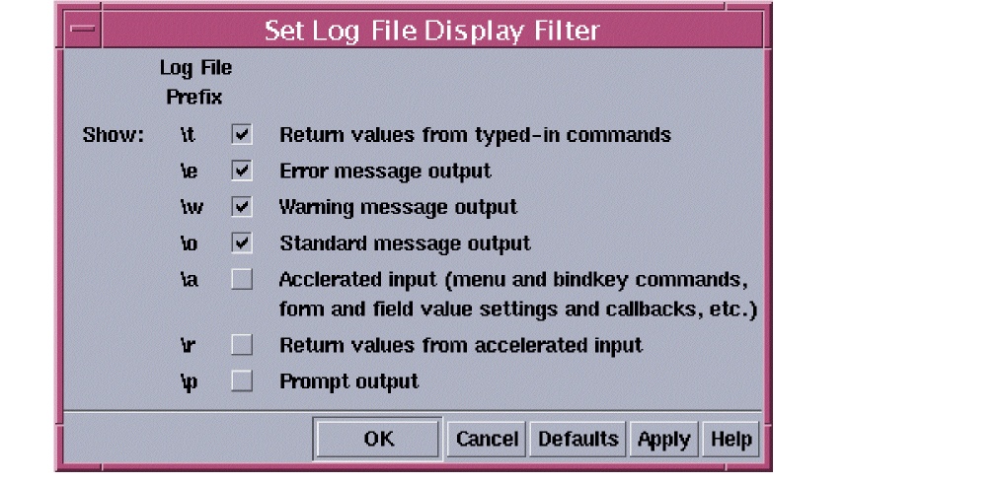

1
Compatibility Guidelines
Beginning with the IC5.2.51 release, Cadence® user interface SKILL (HI) uses the Trolltech® Qt® toolkit instead of Motif® as the underlying user interface toolkit. HI on Qt provides enhanced functionality as well as a contemporary look-and-feel.
Existing user interface SKILL APIs continue to be supported, with a few minor changes. The incompatibilities between previous releases and newer releases (beginning with IC 5.2.51) because of the change to Qt are described in this document.
The Changes in IC 5.2.51 section describes compatibility issues introduced in IC 5.2.51 mainly due to the transition to Qt. The Changes in IC 6.1 section describes compatibility issues introduced in IC 6.1; these are not necessarily related to Qt. The Changes in IC 6.1.2 section describes compatibility issues introduced in IC 6.1.2; these are not necessarily related to Qt.
New SKILL APIs and other enhancements are described in Cadence User Interface SKILL What’s New.
Changes in IC 6.1.2
Two-dimensional Attributes
In two-dimensional attributes, the x_promptBoxWidthOrTitleHeight attribute (which specifies the width of the prompt in fields that have a horizontal layout, such as string fields, or the height of the title box in fields that have a top-down layout, such as a report field) now aligns the field title with the top of the title box instead of the bottom.
Therefore, if you have created a top-down field with a large title box, you will find that the position of the title has moved from the bottom of the title box to the top of the title box and might have to adjust the title box height accordingly. For example:
Action Lists in dag interface
In the dag interface (directed acyclic graph interface), actions on a node can now be triggered by the left and middle mouse buttons; in previous releases, they could be triggered by the left and right mouse buttons. The right mouse button is now used for pop-up menus.
Specifically, for t_actionAccelerator in an action list, the new values "mouseMiddle" and "mouseMiddle2" are available. "mouseRight" and "mouseRight2" continue to be valid values but are now mapped to the middle mouse button instead of the right mouse button. If both "mouseMiddle" and "mouseRight" are defined, the binding for "mouseRight" is ignored; similarly, if both "mouseMiddle2" and "mouseRight2" are defined, the binding for "mouseRight2" is ignored.
Banner Bar Location
In session windows, you cannot move the banner bar; it is always located at the bottom of the window. Note that this also applies to all graphics windows because graphics windows are always enclosed within a session window.
In standalone windows (windows that are not in a session window), you can move the banner bar to your preferred location. The default location is at the top of the window.
The ui showBannerBar variable in the .cdsenv file, therefore, only applies to standalone windows.
Changes in IC 6.1
- Form Layout
- Menu Access Keys
- Bindkeys
- Fixed Menus
- Tree Table
- World View
- Tab Field Labels
- Tab Field Page Scroller
- Color Requirements
Form Layout
In all Qt-based releases, the sizing and placement information you specify is followed for form layouts. Incorrect field placement and sizes will result in forms that do not appear correct, even if they previously appeared correct in Motif-based releases (5.1.41 and earlier releases).
Menu Access Keys
Cadence application menus have been modified for access keys. Access keys are ALT+key combinations that allow keyboard access for displaying menus and selecting menu items. They are created by specifying an ampersand (&) before the desired character in the menu or menu item name. You need to be aware of the following compatibility issues:
-
In your custom code, if you access Cadence menu or menu item names and do string comparisons against them, you need to be aware that there are now extra ampersands in the names because of access keys. You need to modify your code accordingly.
Note that code that accesses Cadence menus through menu handles or symbols is unaffected. -
When you create a menu, if you want to display an ampersand as part of the menu or menu item name, you need to escape it with another ampersand. For example, to display the name
P&R, you need to specify the menu title or menu item text as"P&&R". Otherwise, it will be displayed asPRand R will be the access key for it. -
If you have bindkeys that use
ALT, you should redefine them. See Bindkeys for more information.
Bindkeys
If you have bindkeys that use ALT, you should redefine them. Because ALT is the modifier used with menu access keys, its use with bindkeys is now limited. Specifically, ALT cannot be used with any printable characters (alphanumeric characters and special characters) but it can be used with function keys and for mouse bindings. See the description of the hiBindKeyModifiers function for the list of keys with which ALT can continue to be used.
However, if you want to continue to use ALT with all keys for bindkeys, you can disable menu access keys. See Chapter 3, “Menus”, of the Cadence User Interface SKILL Reference for information on how to do so.
Fixed Menus
Fixed menus are no longer supported in windows. In prior releases, a vertical fixed menu created with hiCreateVerticalFixedMenu could be attached to a window. In IC6.1, instead of creating a fixed menu for a window, you should create a toolbar for it with the new toolbar API or with toolbar files.
Existing fixed menus attached to windows that are placed in session windows will no longer be displayed. Since graphics windows are now always contained in session windows, fixed menus attached to graphics windows will not be displayed. Fixed menus attached to other stand-alone windows continue to be displayed but might have display problems. Therefore, you should replace all existing fixed menus attached to windows with toolbars.
While the functions that add and delete fixed menus from windows—hiAddFixedMenu, hiRemoveFixedMenu, hiMoveFixedMenu, and hiGetWindowFixedMenu— continue to be supported in this release, they will be removed in a future release.
You can continue to create free-floating fixed menus, that is, menus that are displayed in the root window (the screen) and shared by application windows.
The following environment variables related to fixed menus are no longer supported:
useSmallPixmaps
showFixedMenu
showFixedMenuLabels
If set, these variables are ignored.
The corresponding commands in the User Preferences form have also been removed.
Tree Table
-
The g_selectionIcon and g_expandedSelectionIcon arguments of
hiCreateTreeItemare no longer supported; they are ignored if specified. -
In the new tree table implementation, trees and tree items are part of the tree data model, while the tree-table field is the view. Therefore, actions such as expanding a sub-tree, selecting items, and sorting a column do not have any effect until a view (tree-table field) is instantiated.
For example, in previous releases,myTreeItemwould be expanded whenmyFormwas displayed in the following code:hiCreateAppForm( ?name ’myForm, ?fields (list (list myTreeTable ...
hiExpandTreeItem( ’myTreeItem t)
hiDisplayForm( myForm)
With the new model-view implementation,myTreeItemwill not be expanded when the form is displayed because when thehiExpandTreeItemcommand is executed, no tree-view is instantiated. To address that, you need to instantiate the form with the following command:(hiInstantiateForm myForm)
before thehiExpandTreeItemcall, and then display the form.
World View
The hiOpenWorldView function has been replaced by the hiCreateWorldView function.
The hiCloseWorldView function has been removed.
Tab Field Labels
In previous releases, if a tab page had a tab label of nil (specified with the ?tabs argument), the page did not have a tab. In IC 6.1, if a page has a tab label of nil, the page will have a tab, which will either be empty or display the page number depending on the value of the ?pageScroller argument. If pageScroller is t, the page is enabled and its tab displays the page number; if pageScroller is nil, the page is disabled and its tab is blank.
Tab Field Page Scroller
In previous releases, if the ?pageScroller argument of hiCreateTabField was t, a spin box was displayed in the lower-right corner of the tab field. In the IC 6.1 release, a spin box no longer appears. However, this argument is retained for compatibility purposes and its value determines whether a tab page with a tab label of nil displays a page number or not. If this argument is set to t, any page that has a tab label of nil will be enabled and its tab will display the page number; if this argument is nil, any page that has a tab label of nil will be disabled and will have a blank tab.
Color Requirements
Virtuoso Design Environment applications now use a 24-bit TrueColor Visual. If a 24-bit TrueColor Visual is not found on a system, applications look for a 16-bit TrueColor Visual, and then for a 15-bit TrueColor Visual. If none are found, applications do not run.
8-bit color is no longer supported.
Applications no longer have the -use8 and -use24 command-line options.
Also, X resources that control GUI colors (such as Opus.foreground or Opus.borderColor), which were set in the .Xdefaults file, are no longer supported.
Changes in IC 5.2.51
- Modal Dialog Boxes
- Spin Box Field
- Tab Field: Notebook Style
- Tab Placement
- Tab Field Labels
- Order of Drawing Fields
- Saving Viewfiles
- Form Buttons
- Windows
- Prompt or Label Text Containing &
- Fonts
- Browser Preference
- Bindkeys
- Log Filter Form
- Environment Variable Changes
Modal Dialog Boxes
In previous releases, modal dialog boxes could be of two types—application modal (which blocked access to the application until the dialog box was closed) and system modal (which blocked access to the application as well as all system processes until the dialog box was closed). Because Qt does not make a distinction between application modal and system modal dialog boxes, all modal dialog boxes are now application modal, that is, they block access to the application but not to other system processes such as the window manager or other applications.
’systemModal is no longer available as an option for the ?dialogStyle argument of hiDisplayAppDBox or hiDisplayUserDBox. Any existing ’systemModal setting will now be interpreted as ’modal.
Spin Box Field
The ?arrowOrientation argument of hiCreateSpinBox is now ignored. Arrows are always vertical and are displayed to the right of the field. In previous releases, arrows were displayed on both sides of the field and could be either horizontal or vertical (the default was horizontal).
The ?shadowed argument, which was used to place a shadow box around the field, is also ignored. The arrows always have a shadow box around them.
Tab Field: Notebook Style
The Motif Notebook style is no longer available for tab fields. The g_notebookStyle argument of hiCreateTabField is ignored. However, if g_notebookStyle is t, there might be extra space where the spirals were previously displayed, on the side opposite the ?tabPlacement side.
Tab Placement
In a tab field, tabs can now only be placed at the top or bottom of the field; they cannot be placed on the left or right side of the field. In previous releases, tabs could be placed on the left, right, top, or bottom.
If the value of the ?tabPlacement argument of hiCreateTabField is ’left or ’right, tabs will be displayed at the top of the field. Note that this might affect the layout of existing forms.
Tab Field Labels
In a tab field, multiple-line tab labels are not supported any longer. Any labels that have newlines (\n) will now be the height of a single-line label but will be wider to accommodate the full text. This might result in some tabs being hidden, in which case arrows will be displayed to denote that more tabs exist (see figure below).
If you do not want tabs to be hidden, shorten the labels or create tabs without labels (you can do this by specifying an empty string for a label).
Order of Drawing Fields
The user interface SKILL layer does not control the order in which Qt draws fields, which may be incompatible with the order in which Motif draws fields. Therefore, you cannot rely upon a specific drawing order.
In some existing forms, fields have been stacked on top of one other so that one field obscures another. In Qt, this may not work the same way because the order in which fields are drawn may not be the same. If you have such forms, you need to change them.
You can view field borders by typing hiShowFieldBorders(t) in the CIW. Use the ?invisible argument to hide fields that you do not want to display. You can also try changing the order in which fields are added to the form with the ?fields argument of hiCreateAppForm; however, this option may not work in all cases.
Saving Viewfiles
The new file selection dialog boxes are used to open or save viewfiles now. As a result, hiSaveAsViewfileForm and hiOpenNextFileForm, the names by which the old viewfile Save As and Show File forms were logged in the log file in previous releases, are no longer valid. If you have any references to hiSaveAsViewfileForm or hiOpenNextFileForm in replay files, you need to change them. See the log file output of saving or opening a viewfile in the IC5.2.51 release for the new information.
For example, the following section in an old log file:
\a hiSaveAsViewfileForm->file->value = "myFile.txt"
\r "myFile.txt"
\a hiFormDone(hiSaveAsViewfileForm)
would be replaced by the following section in an IC5.2.51 log file:
\a (hiFileDialogSetSelection _hiiGetAnyFile ’("." "myFile.txt") ’done)
\r t
\a (hiFileDialogDone _hiiGetAnyFile t)
\r t
\r ("." "myFile.txt")
Form Buttons
Buttons on forms are now always located at the bottom of the form. In previous releases, they were at the top of the form by default and the location could be controlled by the Form Button Location field in the User Preferences form or the corresponding formButtonLocation environment variable in .cdsenv files.
Neither the form field nor the environment variable are supported in IC 5.2.51. Any existing settings of formButtonLocation in your .cdsenv files will be ignored and will not generate any warnings, for compatibility purposes. However, if unsupported variables are removed in future releases, your existing settings will generate warnings.
Therefore, Cadence strongly recommends that you remove any existing formButtonLocation settings from your .cdsenv files. In IC 5.2.51, when you save your defaults in a .cdsenv file with the Options – Save Defaults command in the CIW, this variable will not be included in the .cdsenv file.
Windows
- The window number, previously displayed at the top-right corner of the window on the banner bar, is now displayed on the bottom-left corner of the window on the prompt bar.
- The banner bar is now displayed below the menu bar instead of above it.
- The banner bar can now be docked at the top or bottom edge of the window.
- Fixed menus that are attached to windows are now dockable toolbars. They can be docked along the top, left, or right edge of the window.
- The mouse bar can now be docked at the top or bottom of the window.
Prompt or Label Text Containing &
In some Qt widgets, the ampersand character (&) followed by an alphabetic character is used to denote a keyboard focus accelerator. The following user interface SKILL form fields follow this convention in IC 5.2.51: all type-in fields (string, integer, float, list, point, bounding-box, and point list), multi-line text fields, combination fields, and push button fields (those created with hiCreateButton or hiCreateFormButton).
If the ?prompt or ?buttonText argument of any of these fields contains & immediately followed by an alphabetic character (without whitespace in between), then ALT+thatAlphabeticChar is the keyboard accelerator to the field. For example:
?prompt "&Name" (keyboard accelerator is ALT+N)?prompt "A&ddress" (keyboard accelerator is ALT+D)?buttonText "Show &Updates" (keyboard accelerator is ALT+U)
However, if & in ?prompt or ?buttonText arguments of these fields is followed by whitespace, then it is escaped and is preserved in the prompt or label text. For example, ?prompt "Point & List" will be displayed as Point & List while ?prompt "Point &List" will be displayed as Point List.
Therefore, if you have any existing form fields of the types listed above that have the & character as part of the label or prompt, make sure that & is followed by whitespace so that it continues to be displayed as intended.
Fonts
-
The Text Font field in the User Preferences form is no longer available. Also, the
textFontenvironment variable is no longer used in.cdsenvfiles. Any existing settings in.cdsenvfiles are ignored.
You can continue to set text fonts with thehiSetFontfunction (which can also be set in your.cdsinitfile) and with the X resourceOpus.textFontin your.Xdefaultsfile. -
When you change the
"label"font with thehiSetFontfunction, the fonts are updated immediately on banners, field prompts, and button labels—even in forms that are currently open or that have already been instantiated. In previous releases, the new settings only applied to new forms.
Browser Preference
You can now specify your Web browser preference with the new Web Browser field in the User Preferences form or the corresponding ui webBrowser environment variable in your .cdsenv file. The default browser is Netscape.
The hiLaunchBrowser function now follows this Web browser setting instead of the CDS_NETSCAPE_PATH environment variable. Hypertext fields and hypertext viewfile windows also follow this setting for hyperlinks instead of the CDS_NETSCAPE_PATH environment variable. CDS_NETSCAPE_PATH is no longer used; any existing settings will be ignored.
Bindkeys
Alphabetical bindkeys are now displayed in uppercase. The bindkeys have not changed; this is a display change only.
For example, a bindkey that was displayed on a menu as c in previous releases is now displayed as C. To use the bindkey, you still use lowercase c. If the bindkey requires an uppercase, it will be displayed as Shift+C.
Log Filter Form
The Set Log File Display Filter form has changed in the following ways:
-
The field descriptions have been updated to the following (the log file prefixes for the fields remain the same, only the descriptions have changed):
 -
The field names have changed. The old form fields could be accessed with
hiSetFilterForm->oldFieldName->subName->value(for example,hiSetFilterForm->showInput->prompts->value). Any references tohiSetFilterForm->oldFieldName will no longer work. Use thehiSetFilterOptionsfunction, instead, to programmatically set the log filter form options.
The new field names are as follows:
Field Description Field Name Accelerated input (menu and bindkey commands, form and field value settings and callbacks, etc.)
-
The environment variables associated with log filter settings have also changed. Any existing settings for these variables in your
.cdsenvfiles will no longer work and need to be replaced with the new variables. The changes are as follows:
Old Environment Variable New Environment Variable Description Accelerated input (menu and bindkey commands, form and field value settings and callbacks, etc.)
Environment Variable Changes
The following changes apply to ui environment variables, which are set in .cdsenv files.
Obsolete ui Environment Variables
The following environment variables are no longer used:
|
No longer used. See Form Buttons for more information. |
|
|
No longer used. See Fonts for more information. |
|
|
(For a description of the new variables, see the Virtuoso Design Environment User Guide.) |
When you save your defaults in a .cdsenv file with the Options – Save Defaults command in the CIW, these variables will not be included in the .cdsenv file.
Any existing settings of these variables in .cdsenv files will be ignored and will not generate any warnings. However, Cadence recommends that you remove these variables from your .cdsenv files.
New ui Environment Variables
For a list of new ui environment variables, see the Cadence User Interface SKILL What’s New document.
Return to top